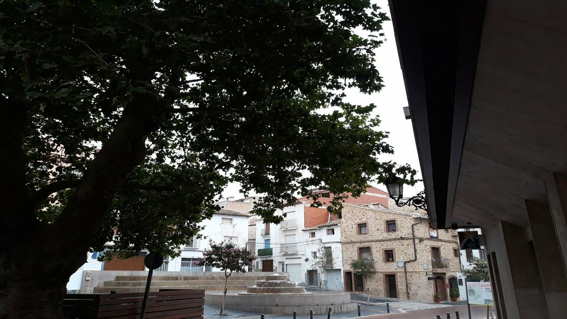

El próximo 12 de septiembre arranca un evento único que busca fusionar la identidad del Alto Palancia con las nuevas corrientes del diseño. Durante tres días, vecinos y visitantes podrán disfrutar de una programación gratuita que incluye música, gastronomía y, sobre todo, mucho oficio.
"Queremos que estas jornadas sean un puente entre las manos que conocen la tradición y las mentes que imaginan el futuro de la artesanía", señalan desde la organización.

Uno de los puntos fuertes del fin de semana serán los talleres en vivo. La ceramista Tanya Sush (Tatsu Cerámica) ofrecerá una demostración magistral de la técnica Rakú, mientras que el dúo formado por Ale e Isa (BICO joyería) guiará a los asistentes en la creación de piezas únicas. Estas actividades buscan fomentar la colaboración ciudadana bajo el lema del evento: "Colabora".

La programación se divide en bloques de mañana y tarde para asegurar que toda la familia encuentre su lugar. Mientras los adultos participan en degustaciones de productos locales, los más pequeños podrán acercarse al arte de la mano de la ilustradora Andrea Esteve (Oh my andromeda), quien coordinará los talleres de dibujo y creatividad en la plaza.
Lo más destacado del fin de semana:
- Mañana: Bienvenida institucional y talleres de joyería cerámica con BICO.
- Tarde: Demostraciones de Rakú a cargo de Tatsu Cerámica y dibujo en vivo con Andrea Esteve.
- Clausura: Música local y clausura de las jornadas el domingo 14 de septiembre.
*La entrada es totalmente libre, reafirmando el compromiso de Altura por acercar la cultura y la artesanía a todos los públicos en un entorno patrimonial inmejorable.